Glavendrup
Grobkörniger, rötlicher Granit
Höhe ü. d. Erde: 188 cm
Breite - Seite A: 142 cm
Seite B: 159 cm
Seite C: 55 cm
Runenhöhe: 17 - 34,5 cm
Runeninschrift:
Ragnhild setzte diesen Stein zum Andenken an Alle den Bleichen (?), den Goden der Heiligtümer, den hochwürdigen "Thegn" des Gefolges. Die Söhne des Alle machten diese "Kumbl" zum Andenken an ihren Vater, und seine Frau zum Gedächtnis ihres Gatten, aber Soti ritzte diese Runen zum Andenken an seinen Herrn. Thor weihe diese Runen. Ein "Ræte" werde der, welcher diesen Stein zerstört oder wegschleppt zur Erinnerung an einen anderen.


85 - Glavendrup - Letztes Update 12.09.2025
Listennummer : DR 209 / DK Fyn 26
Navi-Daten: N 55.50911° / O 10.29743° - oder: DK-5485 Skamby, Stenager 13
Transliteration:
Seite A:
raknhiltr : sa|ti : stain þąnsi : auft | ala : saulua kuþa | uia l(i)þs
haiþuiarþan þia|kn
Seite B: ala : suniR : karþu | kubl : þausi : aft
: faþur | sin : auk : hąns : kuna : auft | uar : sin : in : suti : raist :
run|aR : þasi : aft : trutin : sin | þur : uiki : þasi : runaR
Seite C: at : rita : sa :
uarþi : is : stain þansi | ailti : iþa aft : ąnąn : traki
6. und 7. September 2025 - Der Wikingermarkt in Glavendruplunden (Erwachsene 50 DKK Eintritt) ist am Samstag von 10-17 Uhr und am Sonntag von 10-16 Uhr geöffnet. Der Markt bietet Wikinger-Kampfshows, Führungen und vieles mehr. Das ganze Wochenende über gibt es Arbeitsworkshops. Sie können unter anderem einen Brustharnisch anprobieren, zusehen wie die (neuzeitlichen) Wikinger Wollgarn spinnen und färben, Leder verarbeiten und Weidengeflecht herstellen. Treffen Sie Krieger und Händler, Holzschnitzer, Glasperlenmacher und Schmiede.
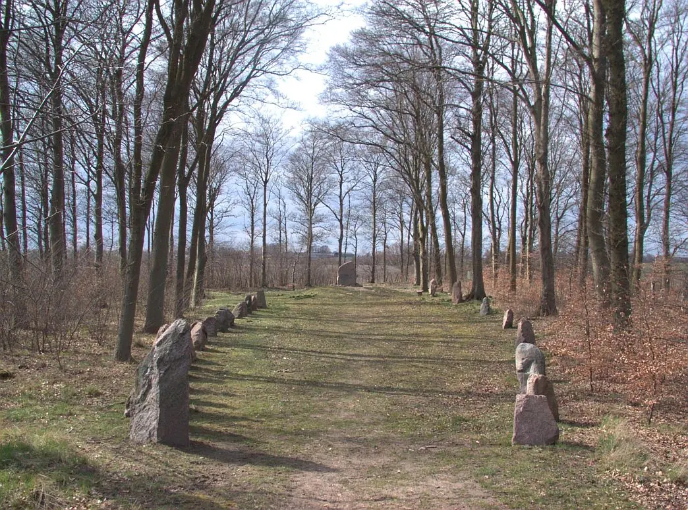
Das ist meines Erachtens das aktuell beste, frei verfügbare Foto der Schiffssetzung mit dem Runenstein als Stevenstein. Da ich bislang immer nur im Sommer - bei dicht belaubten Bäumen - vor Ort war, greife ich ausnahmesweise auf dieses fremde Foto - offenbar vom 11.04.2001 - zurück. Dank an den Urheber!
Bildquelle: Wikipedia - Fotograf: aus Odense - Lizenz: CC BY-SA
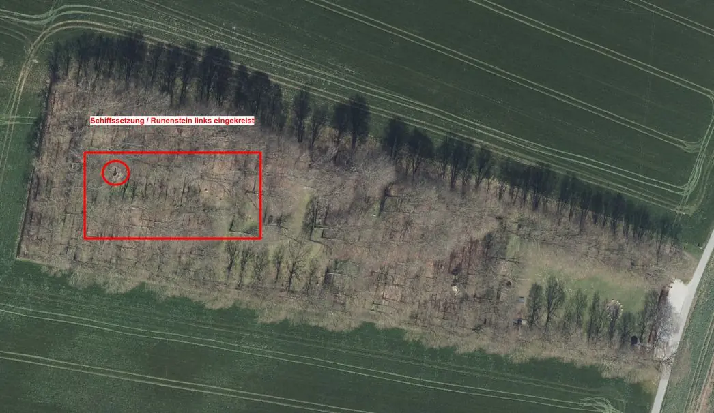
Bildquelle: Skraafoto vom 17.04.2023Skråfoto ist eine Webanwendung, die von Klimadatastyrelsen weltweit kostenlos bereitgestellt wird - Lizenz: CC BY 4.0. Die Aufnahmen werden seit 2017 alle zwei Jahre erneuert und neben einer Senkrechtaufnahme wird ein Schrägbild aus jeder Himmelsrichtung angeboten, das man über eine Adresssuche aufrufen kann.
Über diesen Link kann man sich einen mehrsprachigen Flyer - teilweise auch in Deutsch - abrufen, der reichlich bebildert ist und die Grundlage für die Infotafeln vor Ort bildet. Darin findet sich auch diese komplette Steininschrift in Runenzeichen:
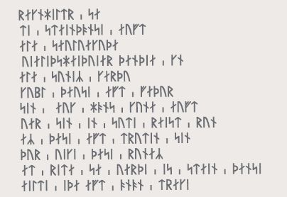
In Glavendruplund, einem Gedenkhain von ca. 325 x 85 m Größe, nordwestlich von Glavendrup (stellenweise auch Glaundrup, Glanderup, Glamendrup genannt) und südöstlich von Skamby auf Nordfünen liegt eine große restaurierte Schiffssetzung - 45 m x 12 m - mit einem Runenstein als Stevenstein. Er beinhaltet die längste Runeninschrift in Dänemark mit insgesamt 210 Runenzeichen. Bis 1999 war der Hain Eigentum des privaten Vereins Glavendruplundstenen, der dann das Eigentum an die Gemeinde Søndersø (seit 2007 Teil der Gemeinde Nordfyn) übertrug. Die Bäume in dem Hain wurden 1907 gepflanzt.
Der Stein wurde sehr wahrscheinlich an seinem ursprünglichen Platz gefunden, in einem großen Denkmal - einer Steinsetzung in Schiffsform, die in jedem Ende mit einem kleinen flachen Hügel abschloss. Diese beiden Grabhügel stammen aus der Bronzezeit (1700-500 v.Chr.) und dienten mehrere Jahrhunderte lang für Bestattungen. Rævehøj wurde 1958 vom Fyns Stiftsmuseum ausgegraben. Die Ausgrabungen zeigten, dass sich im Hügel vier Grabkammern mit Urnenbegräbnissen befanden. In der einen Kammer lag ein Armring aus Bronze zusammen mit den verbrannten Knochen. Der Ring stammt vom Ende der frühen Bronzezeit. Die anderen Gräber sind aus der späten Bronzezeit. Nach der Ausgrabung wurde der südliche Teil des Hügels wieder hergerichtet. Vom Flinthøj ist nur der äußerste Rand ausgegraben. Unter dem Hügel waren Pflugspuren von einem Hakenpflug zu erkennen. Der Hügel wurde also auf einem bestellten Feld angelegt. Genau wie die Schiffssetzung wurden die Hügel im 18. und 19. Jahrhundert durch Sandgewinnung gestört.
Beim westlichen Ende der Schiffssetzung lag der Runenstein auf dem Hügel Ravehøj, niedergesunken in die Erde, teilweise von Sand/Kies verdeckt. Er wurde am 05.09.1864 erneut bei diesem Hügel errichtet, gleichzeitig wurde die ganze Anlage in öffentlichen Besitz übergeben. Zwischen 1892-94 wurde das ganze Denkmal (Runenstein, Hügel und Schiffssetzung) restauriert und unter Denkmalschutz gestellt. Die Instandsetzung war jedoch nicht sonderlich gelungen, da ein Teil der Schiffssetzung nicht in der gleichen Form angelegt wurde, wie sie bei der ersten Bestandsaufnahme angetroffen worden war. Teilweise stand sie im westlichen Hügel, auf dessen Mittelpunkt der Runenstein errichtet wurde. Zwischen dem 08.10.1958 und dem 27.11.1958 hat man die Anlage deshalb erneut restauriert. Bei einer weiteren Instandsetzung wurde im September 2014 der Runenstein auf dem Grabhügel neu angelegt. Außerdem wurden Baumschnittarbeiten durchgeführt.
Die großen Bautasteine, die das symbolische Schiff bilden, haben jetzt eine Länge von 45 m, aber sie müssen ursprünglich eine Ausdehnung von etwa 60 m gehabt haben. Mit Blick auf den Runenstein besteht die Schiffssetzung heutzutage nur noch aus 10 Steinen rechts und 18 Steinen links. Ursprünglich waren es jedoch viel mehr Steine, wie die weiteren Ausführungen unten wiedergeben.
Man wird natürlich an die Anlage von Klebæk Høje erinnert - ein Runenstein in einer Schiffssetzung, in Verbindung mit einem bereits vorhandenen Denkmal (Grabhügel), was sicherlich eine größere Wirkung erzielte.
Die in der Inschrift genannte Ragnhild ließ auch den Stein von Tryggevalde errichten. Die Runenform und die Hautechnik zeigen mit Sicherheit, daß der gleiche Mann - Sote - beide Runensteine ausgeführt hat. Auch der Stein von Rønninge könnte aufgrund der kantigen m-Form von Sote geritzt worden sein.


Aus dem Text der Inschrift, der auf etwa 925 n. Chr. datiert wurde, geht hervor, dass Alle das Oberhaupt eines bedeutenden Wikingergeschlechts war, da er sowohl Gode (Priester), als auch weltlicher Häuptling und Heerführer genannt wird. Da Alle weder in oder bei der Steinsetzung, noch unter dem Runenstein begraben wurde, fand er vielleicht den Tod fern der Heimat.
Die Inschrift enthält außer der Weiheformel für den alten Gott Thor auch eine Drohung für denjenigen, der das Denkmal zerstört oder den Stein von der Stätte wegschleppt. Eine alte Sage erzählt, dass der damalige Grundbesitzer krank wurde, als er versuchte, den Stein zu entfernen; deshalb ließ er ihn liegen. Er starb dann nicht gleich, sondern er "schwand wie Tau an der Sonne". Die aus insgesamt 210 Runen bestehende Inschrift wird wie folgt gelesen:


Bildquelle: Fotografien von
Erik Moltke
(*04.04.1901 - 19.10.1984, Runologe, Historiker)
vom 04.06.1931 - Der
Digitale
Sammlung des Nationalmusems Kopenhagen entnommen -
Seite A /
Seite B
/
Seite C - Lizenz jeweils:
CC-BY-SA - Den Verlauf der umfangreichen Inschrift habe ich
eingearbeitet. Zu "5"
verlaufen nur die zwei Runen
 paralell zum Ende der Linie "4",
weil dem Runenritzer da irgendwie der Platz ausging.
paralell zum Ende der Linie "4",
weil dem Runenritzer da irgendwie der Platz ausging.
Der Stein diente außerdem in früheren Zeiten einem anderen Zweck, wie Schalenzeichen (dänisch: Skåltegn) erkennen lassen, mit denen der Stein übersät ist. Hier ein Link zu einer 52-seitigen deutschprachigen Abhandlung von Urs Schwegler mit dem Titel "Was sind Schalensteine?"
Die erste Mitteilung zu dem Runenstein von 1804 hat sich laut Lis Jacobsen/Erik Moltke - Danmarks Runeindskrifter - 1942 - Text, in Form einer Abzeichnung der Runen von Niels Hofman Bang (*08.06.1776 [rechte Seite, linke Spalte, 2.von oben] - 05.03.1855 auf Hofmansgave - Botaniker, Landwirt und Reisender - link-LIVES - Literaturhinweis)
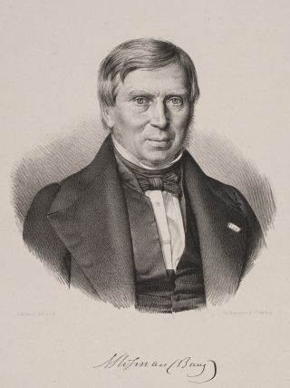
Bildquelle: SMK Open - Lizenz: Public Domain - Lithografie von 1856 von L. A. Smith del & Lith.in Kopenhagen im Antikvarisk -Topografisk Arkiv erhalten. Auf Anfrage teilte mir das Archiv, Dánial Magnusson Haraldsen - Student Assistant, am 12.09.2025 mit, dass die Zeichnung nicht aufzufinden ist. Der Name des Zeichners und die Zeichnung finden sich aber auch überhaupt nicht in deren Zeichnungsübersicht.
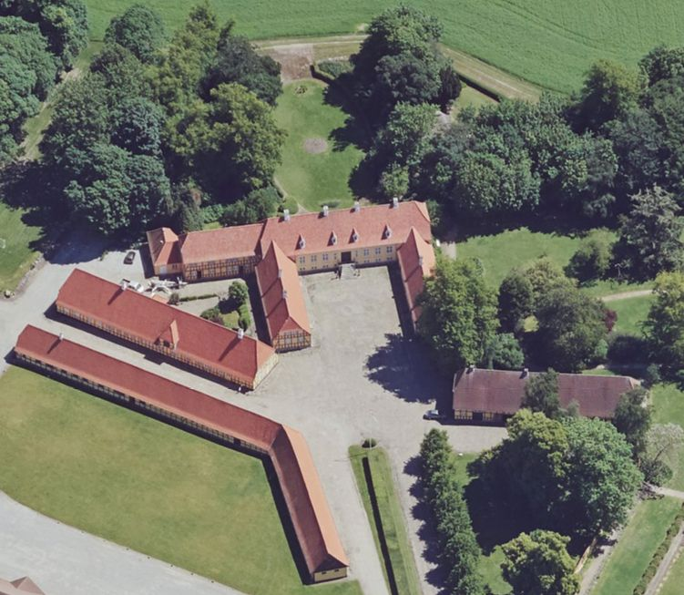
Hofmansgave - Bildquelle: Luftfoto vom 07.06.2019 von Skråfoto - Klimadatastyrelsen - Lizenz: CC BY 4.0Der Stein wurde dann im Jahre 1806 durch einen Bericht von Laurits Schebye Vedel Simonsen (*20.12.1780 - 12.07.1858, Arzt und Historiker - link-LIVES),
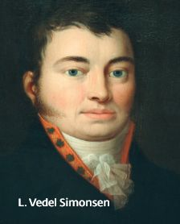
Bildquelle: Glavendrup Flyer - Lizenz: Public Domainöffentlich bekannt. Der wurde auf dem Herrenhof Elvedgård - knapp 15 km südwestlich vom Fundort des Runensteins gelegen - geboren und lebte dort auch bis zu seinem Tod.
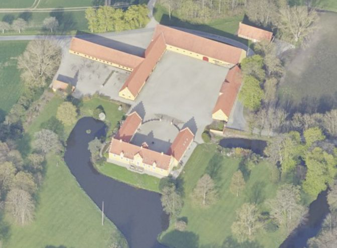
Bildquelle: Luftfoto vom 01.05.2023 von Skråfoto - Klimadatastyrelsen - Lizenz: CC BY 4.0Zu der Zeit seines Berichtes lag der Stein umgefallen und teilweise von Kies bedeckt in der Erde. Nur eine Ecke hat wohl schon immer herausgeschaut. Aber 14 Jahre lang sei bereits bekannt gewesen, dass der Stein eine Inschrift trägt, ohne dass sich der Grundstückseigentümer oder sonst wer darum gekümmert hätte. Einer Volkssage nach sei der Stein für Ingjald und Thorstein errichtet worden. Erst Vedel Simonsen, der von Jørgen Strøbech (*?.09.1797 - 02.09.1838 - link-LIVES), damaliger Verwalter auf Gut Langesø - ca. 15 km südwestlich vom Fundort des Runensteins -
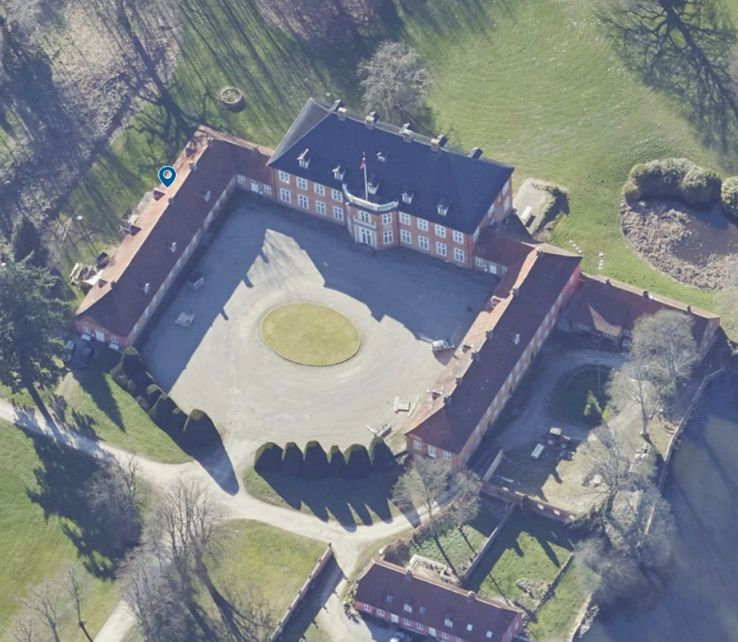
Bildquelle: Luftfoto vom 05.04.2023 von Skråfoto - Klimadatastyrelsen - Lizenz: CC BY 4.0auf den Stein aufmerksam gemacht wurde, ließ ihn nun ausgraben und darüber erkannte man auf dem mächtigen Granitblock die komplette dreiseitige Inschrift mit über 200 Runen. Nicht weniger als 20 Mann waren damals nötig um den ca. 7 Tonnen schweren Stein aufzurichten. Verwalter Strøbech und der Landvermesser Rasmussen waren bei der Aufrichtung vor Ort. Vedel Simonsen und die besagten beiden Herren maßen und zeichneten den Stein jeder für sich. Dann verglichen sie die Zeichnungen noch miteinander, woraufhin Vedel Simonsen seine an Professor Rasmus Nyerup nach Kopenhagen sandte.
Der Fund dieses Runensteins hatte natürlich für sehr viel Aufmerksamkeit gesorgt, worauf zahlreiche Forscher sich ihm und der Schiffssetzung widmeten.
Von Rasmus Nyerup (*12.03.1759 - 28.06.1829, dänischer Literaturhistoriker, Philologe, Folklorist und Bibliothekar)
 Bildquelle: 1827
aus Kunstsammlung abfotografiert -
Det Kgl. Biblioteks billedsamling - Lizenz:
Public Domain
Bildquelle: 1827
aus Kunstsammlung abfotografiert -
Det Kgl. Biblioteks billedsamling - Lizenz:
Public Domain
wurde in der Zeitung "Dagen, Ausgabe Nr. 142, vom 02.09.1806" auf der Seite 4 (links unten) über die Entdeckung des Runensteins durch Laurits Schebye Vedel Simonsen berichtet. Die an ihn gesandte Zeichnung von Vedel Simonsen gab er an Capitain Abrahamson weiter.
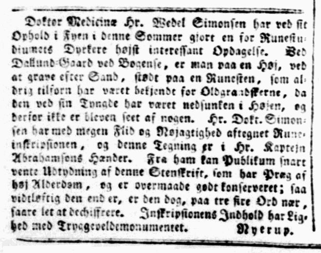
Übersetzung: "Der Doktor der Medizin, Hr. Vedel Simonsen, hat bei seinem Aufenthalt in Fünen in diesem Sommer eine für Runenforscher höchst interessante Entdeckung gemacht. Beim Dallung-Hof bei Bogense, wo ein Hügel liegt, bei dem man nach Sand gegraben hat, stieß man auf einen Runenstein der den Altertumsforschern bislang unbekannt war, da er umgefallen und in dem Hügel eingesunken war, weshalb er bislang kaum zu sehen war. Herr Dokt. Simonsen hat die Runeninschrift mit großer Sorgfalt und Genauigkeit gezeichnet, und diese Zeichnung ist in den Händen von Kapitän Abrahamson. Von ihm kann die Öffentlichkeit bald die Interpretation dieser Steininschrift erfahren, die sehr alt aussieht und außerordentlich gut erhalten ist. So weit hergeholt es auch ist, es ist einfach, drei oder vier Wörter zu entziffern. Der Inhalt der Inschrift ähnelt der des Tryggeveldemonument. Nyerup."
In "Det skandinaviske Litteraturselskabs Skrifter, 1806, Andet bind" findet sich auf den S. 105-121 unter dem Titel "En nyelig opdaget Runesteen" von Capitain Abrahamson ein erster Bericht zu dem Runenstein.
Es handelt sich bei dem Autor um Werner Hans Friedrich Abrahamson (*10. April 1744 - 22. September 1812, dänischer Offizier, Schriftsteller, Herausgeber und Übersetzer - link-LIVES).
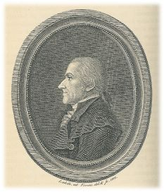
Bildquelle: Wikipedia - Lizenz: Public DomainLeider ist in der von Google digitalisierten Ausgabe die vorangestellte Zeichnung von Laurits Schebye Vedel Simonsen nicht ausgeklappt gescannt worden.
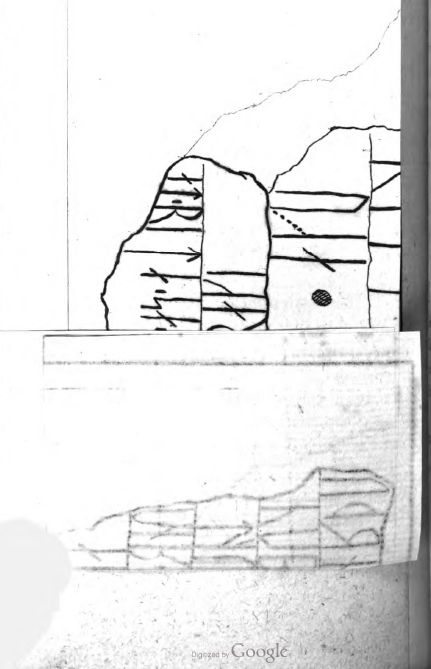
Diesbezüglich hatte ich per E-Mail an Michael Lerche Nielsen (*1964, Professor - Department of Nordic Studies and Linguistics an der Universität in Kopenhagen) geschrieben, der sich seinerseits an Mette Keinicke von der Gentofte Hovedbibliotek wandte. Die hat aus dem dortigen Exemplar unverzüglich ein digitales Foto gemacht und so darf ich mich glücklich schätzen den Kupferstich der besagten Zeichnung heute - 30.04.2024 - hier präsentieren zu können. Herzlichen Dank - Tusind tak - den beiden für ihren Einsatz!

In der Ausgabe des Jahres 1807, 2. Band, der Det skandinaviske Litteraturselskabs Skrifter setzt sich Erich Christian Werlauff (*02.07.1781 - 05.06.1871, dänischer Historiker - link-LIVES)
 Bildquelle:
Wikipedia - Lizenz:
Public Domain
Bildquelle:
Wikipedia - Lizenz:
Public Domain
auf den S. 276-288 in dem Artikel mit dem Titel "Curæ Posteriores til Kapitain Abrahamsons Forklaring over den Glavendrupske Runesteen" mit der o.a. Abhandlung von Abrahamson auseinander. Auf den S. 282-286 gibt er eine Stellungsnahme seines früheren Lehrers Skúli Þórðarson Thorlacius (*10.04.1741 - 30.03.1815, isländischer Philologe)
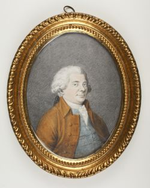
Bildquelle: Wikipedia - Lizenz: Public Domainwieder, den er um Auskunft gebeten hatte.
Von Rasmus Christian Rask (* 22.11.1787 - 14.11.1832, dänischer Indogermanist und Polyglott - link-LIVES)
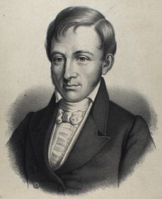
Bildquelle: Wikipedia - Lizenz: Public Domainfindet sich in der Monatszeitschrift "Ny Minerva" aus dem Jahr 1808, S. 271 - 287, eine Abhandlung mit dem Titel "Noget om den glavendrupske Runesteen i Fyen, som Epilegomena til Hr. Mag. og Bibliotheksecretair Werlauffs Afhandling derom i det skandinaviske Litteraturselskabs Skrifter for 1807, 3die Kvartal". Darin findet sich der Wortlaut des Briefes von Laurits Schebye Vedel Simonsen zur Entdeckung des Runensteins.
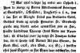 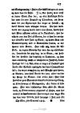 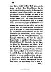 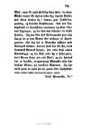


Hier der Brief als Text und darunter eine Übersetzung:
»I Maj 1806 besøgte jeg under mit ophold i Fyn de mange og skönne alderdommens lævninger af stendysser, offersteder, tingkredse o. s. v., som i så stor en mængde findes på Dallunds gods. Godsets brave og oplyste forvalter hr. Strøbech gjorde mig blandt andet opmærksom på en höj hinside landsbyen Torup (dens navn var Rævehöj"; ti 0les höj tror jeg næppe hr. Zeuthen [præsten i Skamby] kaldte den, för vi havde læst navnet Ali på stenen), i hvilken efter hans sigende en stor sten lå nedsjunken, som ved sandgravning i höjen efter udskiftningen alt mere og mere kom for lyset. I 14 år havde man vidst, at denne sten lå der, og efter folkesagn skulde den være sat over Ingjald og Torsten, om hvem man der på egnen ved så meget at fortælle, og deres navne være udhugne derpå. Da han imidlertid selv en gang havde været på höjen, havde han med möje afskrevet enkelte af de karakterer, han forefandt på den del af stenen, der ej som det øvrige var tildækket med jord og sand, og havde siden ved sammenligning med et runealfabet funden, at det måtte være runer. Han viste mig denne sin afskrift, og uagtet runerne kun vare få og ufuldkomne, forundrede det mig dog, at en sten, om hvilken der herskede så betydelig en tradition, og som man almindelig vidste at indeholde en indskrift, kunde henligge i 14 år, uden at nogen af landets egne lærde eller rejsende værdigede den deres opmærksomhed; så meget mere som jeg med ængstelighed hørte, at bonden, på hvis grund den lå, oftere var budet penge for stenen, som altså stod i fare som snarest at gå stenmindesmærkers sædvanlige gang, at blive sprængt til stengærde, eller kløvet til ledpæle. På min indstændige bön tillod hr. Strøbech, at stenen måtte udgraves af höjen; men formedelst mellemkommende forretninger på bægge sider blev dette arbejde først foretaget i Juli med ikke liden möje, eftersom en snes karle måtte arbejde derpå i to dage. Den side af stenen, som för den tid til dels lå blottet, var forsiden [fladen med indskriftens begyndelseJ; var altså noget beskadiget, forinden tegningen blev tagen, da var det denne side. Efter at den uden for höjen var oprejst på den ene kant, blev den hele sten afvasket og indskriften selv desuden ved hjælp af en børste renset; hvorpå så vel jeg som hr. landmåler Rasmussen, der foruden flere var til stede, toge hver sin tegning deraf og gjorde os derved umage for ved hjælp af målestok og passer at få monumentet så nöjagtig som muligt afkopieret efter alle dets dimensioner og proportioner; hvorfor vi og ved hjemkomsten på det nöjagtigste konfererede vore tegninger indbyrdes ...... Ved min tilbagekomst til hovedstaden overleverede jeg prof. Nyerup tegningen, og den kom som bekendt i de bedste hænder. Jeg har siden hos vedkommende mig umage for at få stenen selv indflyttet til hovedgården, eller dog ved et brædeskur beskyttet mod vejrligets ulempe; men det første kan ikke ske, dels formedelst stenens tyngde, som vilde knuse enhver arbejdsvogn; og det sidste lader sig ej heller göre, fordi stenen står på vild mark, og det således var at forudse, at egennyttige mennesker vilde sønderslå skuret og bortstjæle bræderne. Og således går nu også her det gamle ord i opfyldelse: mors etiam saxis marmoribusque venit.«
"Im Mai 1806, während meines Aufenthalts auf Fünen, besuchte ich die vielen und schönen alten Überreste von Steingräbern, Opferstätten, Bezirken usw., die auf Dallunds Anwesen in so großer Menge zu finden sind. Der anständige und aufgeklärte Verwalter des Anwesens, Herr Strøbech, machte mich unter anderem auf einen Hügel hinter dem Dorf Torup aufmerksam (sein Name war Rævehöj; oder 0les höj, ich glaube kaum, Herr Zeuthen [der Priester in Skamby] nannte es, bevor wir den Namen Ali auf dem Stein gelesen hatten, in dem seiner Aussage nach ein großer Stein versunken lag, der durch das Graben von Sand im Hügel immer mehr ans Licht kam. Seit 14 Jahren war bekannt, dass dies der Fall war. Dort lag ein Stein, und der Legende nach sollte er über Ingjald und Torsten platziert werden, über die man in der Region so viel weiß, und ihre Namen sind darauf eingemeißelt. Da er jedoch selbst einmal auf dem Hügel gewesen war hatte er einige der Zeichen abgeschrieben, die er auf einem Teil des Steins gefunden hatte, der nicht wie der Rest mit Erde und Sand bedeckt war, und hatte seitdem durch den Vergleich mit einem Runenalphabet herausgefunden, dass es sich um Runen handeln musste. Obwohl die Runen auf seiner Abzeichnung nur wenige und unvollkommen waren, wunderte es mich, dass ein Stein, über den eine so beträchtliche Überlieferung herrschte und von dem allgemein bekannt war, dass er eine Inschrift enthielt, vierzehn Jahre lang liegen konnte, ohne dass einer der Gelehrten oder Reisenden darauf aufmerksam wurde; Dies umso mehr, als ich mit Besorgnis hörte, dass der Bauer, auf dessen Land er lag, oft Geld für den Stein geboten hatte, der somit in Gefahr war, den üblichen Weg von Steindenkmälern zu gehen, gesprengt oder gespalten zu werden und in einer Steinmauer zu lan den. Auf meine dringende Bitte hin erlaubte Herr Strøbech, den Stein vom Hügel aufzuheben; Aufgrund von Zwischengeschäften auf beiden Seiten konnten diese Arbeiten jedoch erst im Juli durchgeführt werden, und zwar mit nicht geringen Schwierigkeiten, da zwanzig Männer zwei Tage lang daran arbeiten mussten. Die Seite des Steins, die zu diesem Zeitpunkt teilweise freigelegt war, war die Vorderseite [die Oberfläche mit dem Anfang der Inschrift]; daher vor der Erstellung der Zeichnung etwas beschädigt war, dann war es diese Seite. Nachdem er an einer Kante aufrecht außerhalb des Hügels stand, wurde der gesamte Stein gewaschen und auch die Inschrift selbst mit einer Bürste gereinigt; Daraufhin fertigten sowohl ich als auch Herr Rasmussen, der Landvermesser, der neben mehreren anderen anwesend war, jeweils eine andere Zeichnung davon an und achteten dabei auf Maßstab und Passung, um das Denkmal so genau wie möglich nachzubilden in all seinen Dimensionen und Proportionen; und als wir nach Hause zurückkehrten, besprachen wir unsere Zeichnungen sehr genau untereinander Bei meiner Rückkehr in die Hauptstadt übergab ich die Zeichnung an Prof. Nyerup, und wie Sie wissen, landete sie bei ihm in den besten Händen. Seitdem habe ich mir gemeinsam mit dem Grundbesitzer Mühe gegeben, den Stein selbst in den Haupthof oder zumindest in einen vor der Witterung geschützten Holzschuppen zu transportieren; aber das erste kann nicht passieren, teilweise wegen des Gewichts des Steins, der jeden Arbeitskarren zerdrücken würde; und letzteres ist auch nicht möglich, da der Stein in einem wilden Feld steht und daher zu erwarten war, dass eigennützige Menschen den Schuppen aufbrechen und die Bretter stehlen würden. Und so bewahrheitet sich nun auch hier das alte Sprichwort: mors etiam saxis marmoribusque venit = Der Tod ereilt sogar Steine."
Ein weiterer Beitrag von Rasmus Christian Rask mit dem Titel "Noget om den glavendrupske Runesteen i Fyen" ist in dem Werk "Samlede tildels forhen utrykte afhandlinger, Band III, 1838", auf den S. 402-413, veröffentlicht worden. Auch darin wird der Wortlaut des Briefes von Laurits Schebye Vedel Simonsen zur Entdeckung des Runensteins wiedergegeben. Auf der S. 413 gibt Rask die Inschrift über seine eigene Aufzeichnungen in Runenzeichen und seine Deutung der Inschrift, die erste richtige Deutung im Großen und Ganzen überhaupt, wieder.

Unterzeichnet Egelund am 26. September 1826 von R. Rask
Durch Laurits Schebye Vedel Simonsen wurde mit Datum vom 02.05.1811 ein Brief mit der Abzeichnung von Hofman Bangs an das Nationalarchiv nach Kopenhagen gesandt. Darin berichtet er über dessen Entdeckung, die Ausgrabung des Steins und über die Aufstellung des Steins.
Von Rasmus Nyerup wurde im Jahr 1824 in seinem deutschsprachigen Werk "Verzeichnis der in Dänemark 1824 noch vorhandenen Runensteine" auf der S. 20/21 über den Runenstein von Glavendrup und die bis dahin vorliegende Literatur berichtet.
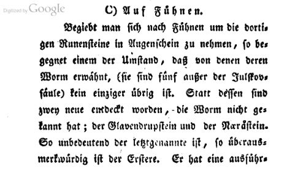
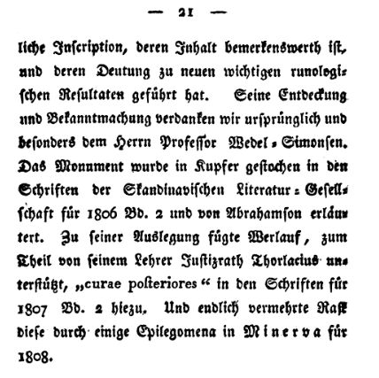
Johan Gustav Liljegren (*27.02.1791 -02.06.1837, schwedischer Nationalarchivar und Archäologe)
 Bildquelle:
Schwedisches Reichsarchiv - Lizenz:
Public Domain
Bildquelle:
Schwedisches Reichsarchiv - Lizenz:
Public Domain
hat 1833 das Buch "Run - Urkunder" herausgebracht, in dem er diesen Runenstein auf der S. 169 / 170 unter der Nr. 1489 aufführt.
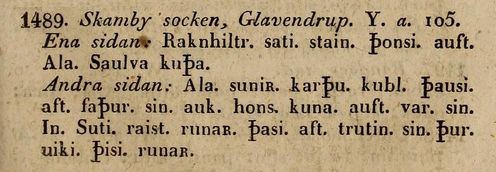
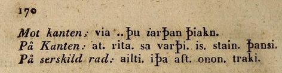
Niels Matthias Petersen (meist N. M. Petersen abgekürzt, *Nacht vom 24./25. Oktober 1791 - 11. Mai 1862, dänischer Literaturwissenschaftler zu Skandinavistik und Historiker - link-LIVES - Lebensbeschreibung auf dänisch) geht in dem Werk ""Danmarks Historie i Hedenold, Band III", 2. Auflage 1837, auf der Seite 366-68 auf den Glavendrup Runenstein und die erste Lesung des Runensteins von Rasmus Christian Rask aus dem Jahr 1826 ein.
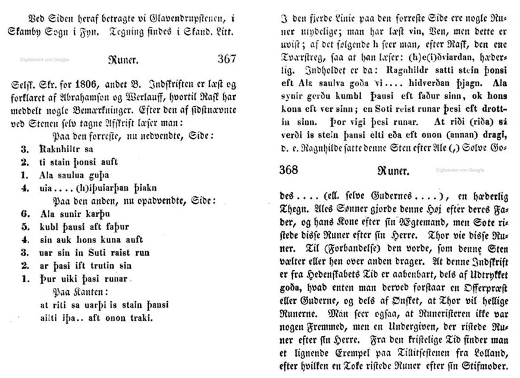
Prof. Jens Jacob Asmussen Worsaae (*14.03.1821 - 15.08.1885, dänischer Archäologe und Vorgeschichtler - link-LIVES - Bestattungsprotokoll)
 Bildquelle: Fotografie
um 1863 von Fotograf Budtz Müller
(*26.12.1837 -
30.12.1884) -
Det Kgl. Biblioteks billedsamling - Lizenz:
Public Domain
Bildquelle: Fotografie
um 1863 von Fotograf Budtz Müller
(*26.12.1837 -
30.12.1884) -
Det Kgl. Biblioteks billedsamling - Lizenz:
Public Domain
berichtet in dem Buch "Danmarks Oldtid oplyst ved Oldsager og Gravhøie" im Jahr 1843 auf der S. 93 über den Runenstein und gibt die Inschrift nach Rasmus Christian Rask aus dem Jahr 1826 wieder.
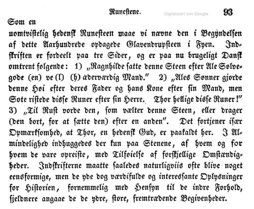
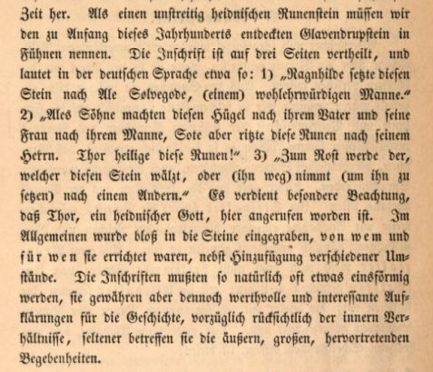
Dieses Buch wurde auch in die deutsche Sprache übersetzt, trägt den Titel "Dänemarks Vorzeit durch Alterthümer und Grabhügel" und wurde 1844 herausgegeben. Die entsprechende Passage findet sich auf der S. 94 - siehe oben.
Worsaae hat außerdem in seinem Tagebuch IX aus dem Jahr 1848 auf der S. 22 eine Beschreibung des Fundplatzes und der Inschrift eingetragen.


Dessen Tagebücher werden heute in Kopenhagen in dem "Antikvarisk-Topografisk Arkiv" aufbewahrt, worüber ich bei meinem Besuch am 27.09.2022 Einsicht nehmen und diese Fotos anfertigen durfte. Den eigentlichen Eintrag habe ich aber leider übersehen, bekam ihn aber freundlicherweise von einem netten Mitarbeiter des Archivs auf Anfrage per E-Mail nachgereicht - Tusind tak Dánial!
Von Martin Friedrich Arendt (* 22. Februar 1773 in Altona; April 1823 in der Nähe von Venedig/Italien, Botaniker und Altertumsforscher)
 Bildquelle:
Antikvarisk-Topografisk
Arkiv - Lizenz:
Public Domain
Bildquelle:
Antikvarisk-Topografisk
Arkiv - Lizenz:
Public Domain
haben sich im Antikvarisk -Topografisk Arkiv in Kopenhagen seine Aufzeichnungen zu dem Runenstein erhalten. Bei meinem Besuch in diesem Archiv am 27.09.2022 konnte ich dessen dort verwahrte Hinterlassenschaft sichten und die Seiten selbst abfotografieren.
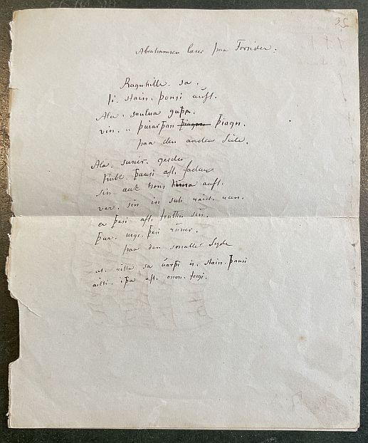
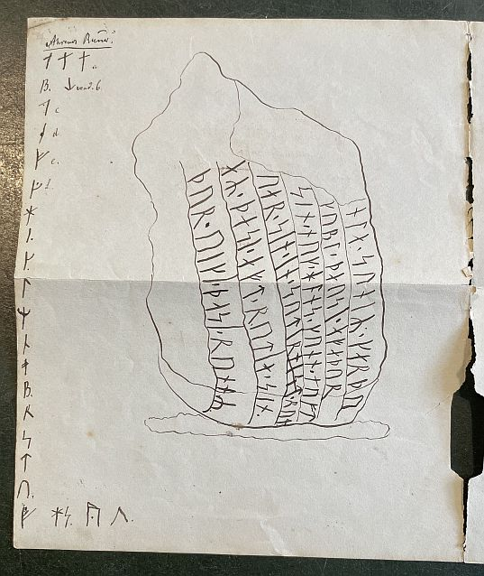
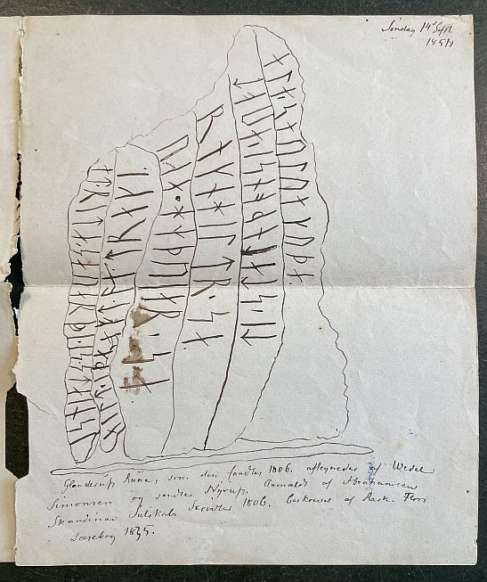
Auf Blatt 3 steht unter der Zeichnung quasi die Historie zu dem Runenstein. Die Zeichnung ist eine eigenhändige Kopie der Zeichnung aus dem Buch "Det skandinaviske Litteraturselskabs Skrifter, 1806, Andet bind" von Laurits Schebye Vedel Simonsen. Da sie auf Blatt 3 rechts oben auf "Sonntag, 14. Sept. 1851" (Es war auch wirklich ein Sonntag) datiert wurde, kann sie aber tatsächlich nicht von Arendt sein, das er zu der Zeit schon längst verstorben war. Wie sie dann in die Sammlung seiner Hinterlassenschaft kam ist mir unbekannt.
Carl Christian Rafn (*16.01.1795 - 20.10.1864, Altertumsforscher - link LIVES - Bestattungsprotokoll)
 Bildquelle: Zeichner
Magnus Petersen -
Det Kgl. Biblioteks billedsamling - Lizenz:
Public Domain
Bildquelle: Zeichner
Magnus Petersen -
Det Kgl. Biblioteks billedsamling - Lizenz:
Public Domain
bringt in seinem Werk "Antiquités de l'Orient - Monumens runographiques" von 1856 auf der S. 193-95 Ausführungen zum Runenstein, sowie dessen Inschrift mit Leserichtung über eine Zahlenreihenfolge.
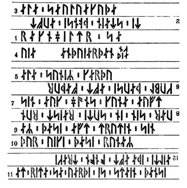
Prof. Julius Magnus Petersen (*04.09.1827 - 31.01.1917, Archäologischer Zeichner und Restaurator - link-LIVES - Bestattungsprotokoll), zu seiner Zeit der begnadetste Zeichner von Runendenkmälern, zu einer Zeit als die Fotografie noch in den Kinderschuhen steckte,
 Bildquelle:
Fotografie von 1903 von Fotograf Marius Christensen
(*24.6.1874 -
25.6.1907) -
Det Kgl. Biblioteks billedsamling - Lizenz:
Public Domain
Bildquelle:
Fotografie von 1903 von Fotograf Marius Christensen
(*24.6.1874 -
25.6.1907) -
Det Kgl. Biblioteks billedsamling - Lizenz:
Public Domain
schreibt in seinen Lebenserinnerungen mit dem Titel "Minder fra min virksomhed paa arkaeologiens omraade fra 1845 til 1908" von 1909 - S. 50 ff. - diese Zeilen: "...Men jeg vil nu atter vende tilbage til Aarene 185556, da Prof. Thorsen endelig gav nogle Livstegn fra sig angaaende det omtalte Runeværk. I det førstnævnte Aar bad han mig om at rejse til Fyen for at tage Tegninger af Runestenen ved Kjerteminde (Rønningestenen) og Nørre Næraastenen samt den store Glavendrupsten. Siden 1806 da den opdagedes, havde ingen bekymret sig videre om denne mærkelige Sten; jeg fandt derfor den prægtige Granitblok i en sørgelig Forfatning halvt dækket af Jord og Mos, nedskredet i et dybt Hul eller Grusgrav ved en langagtig Høj, som den oprindelig havde staaet ved eller ovenpaa; ved en nøjere Undersøgelse fandt jeg, at denne Højning hvorpaa Stenen havde staaet, var en gammel ødelagt »Skibssætning«, thi ved den modsatte Ende af den, hvor Stenen da laa, stod endnu tre c. 3 Al. høje Stene og langs hen ad Siderné af Højningen laa Rækker af noget mindre Stene omfaldne, og dybe Mærker af andre, der nu vare borttagne; jeg tog Maal af Højningen, der i sin oprindelige Tilstand maa have maalt hen ved 300 Fod (i 1869 var jeg atter paa Stedet og reviderede Planen). Runestenen laa heldigvis saaledes, at alle de med Runer indhuggede Sider kunde sees, jeg tog Tegninger og Gnidebilleder (»Rubbings«) af hele Indskriften, og et Prospektbillede af Højen samt Reskrivelser af den Tilstand det Hele fandtes i, fordi jeg troede, at Thorsen vilde gjøre noget for, at der kunde fredes bedre om den. Det varede dog nogle Aar før der ved anden Hjælp foretoges noget ved denne Sag1. Glavendrupstenen er efter Indskriften et sikkert hedensk Mindesmærke den er rejst af en Kvinde »Ragnhild over Sølve, en Hædersmand, Atles Sønner gjorde Mindesmærket og Soto ristede Runerne, hver den der forstyrrer dette skal være forbandet, Thor være helliget disse Runer«. Indskriften bestaar af over 200 Runestave, og Mindesmærket maa ansees for et af de mærkeligste i Danmark..."
1 = Tegning af Gravhøjen eller Skibssætningen har jeg beskrevet og tegnet til »Illustr. Tidende«, 15 Bind 1878. S. 181 og i Wimmers Runeværk. Planen af Højningen m. m. i Mus. Arkiv.
Übersetzung: "Nun möchte ich aber noch einmal auf die Jahre 1855-56 zurückkommen, als Prof. Thorsen endlich ein Lebenszeichen bezüglich des erwähnten Runenwerks von sich gab. Im erstgenannten Jahr bat er mich, nach Fünen zu reisen, um Zeichnungen des Runensteins von Kjerteminde (Rønningestein) und des Nørre-Næraa-Steins sowie des großen Glavendrup-Steins anzufertigen. Seit seiner Entdeckung im Jahr 1806 hatte sich niemand mehr um diesen seltsamen Stein gekümmert; So fand ich den prächtigen Granitblock in einem traurigen Zustand, halb mit Erde und Moos bedeckt, zusammengesunken in einem tiefen Loch oder einer Kiesgrube neben einem langgestreckten Hügel, auf dem er ursprünglich gestanden hatte. Bei näherer Betrachtung stellte ich fest, dass es sich bei dieser Erhebung, auf der der Stein gestanden hatte, um eine alte zerstörte Schiffssetzung handelte, denn am gegenüberliegenden Ende, wo der Stein damals lag, befanden sich noch drei ca. 3 Alen hohe Steine (Anm.: 1 Elle = 62,77 cm) und an den Seiten der Erhebung lagen Reihen etwas kleinerer heruntergefallener Steine und tiefe Spuren anderer, die inzwischen entfernt worden waren. Ich nahm Messungen dazu vor, die im Originalzustand 300 Fuß betragen haben musste (1869 war ich erneut vor Ort und überarbeitete den Plan). Glücklicherweise lag der Runenstein so, dass alle mit Runen eingravierten Seiten zu sehen waren. Ich fertigte Zeichnungen und Abformungen der gesamten Inschrift an, außerdem ein Prospektbild des Hügels sowie Beschreibungen des Zustands, in dem er sich befand. Das Ganze geschah, weil ich glaubte, dass Thorsen etwas tun wollte, damit es besser geschützt werden konnte. Es dauerte jedoch mehrere Jahre bis mit anderer Hilfe etwas in diesem Fall unternommen wurde1. Der Inschrift zufolge ist der Glavendrup-Stein ein sicheres heidnisches Denkmal er wurde von einer Frau Ragnhild über Sølve, einem Ehrenmann, errichtet. Die Söhne von Atles machten das Denkmal und Sote schnitzte die Runen. Wer dies stört, muss verflucht werden. Thor werde durch diese Runen geheiligt. Die Inschrift besteht aus über 200 Runen und das Denkmal muss als eines der seltsamsten in Dänemark angesehen werden ..."
1 = Ich habe die Zeichnung des Grabhügels bzw. der Schiffssetzung angefertigt für die »Illustr. Tidende', 15. Band 1878. S. 181 und Wimmers Runenwerk. Der Plan von Hügel usw. in Mus. Archiv.
Auf diesen o.a. Zeitungsbeitrag von Magnus Petersen mit dem Titel "Runestenen og "Skibssætningen" i Glavendrup i Fyen" in der "Illustreret Tidende" möchte ich direkt an dieser Stelle eingehen, der sich seit 2002 dankenswerter Weise einfach über eine gesonderte Webseite der Königlichen Bibliothek in Kopenhagen in digitalisierter Form abrufen lässt. Dazu wählt man dort einfach die gewünschte Ausgabe (Vælg årgang / Vælg hæfte) - also in diesem Fall : Årgang 16 (1874-75) / Nr. 799 (17.01.1875) - und kann danach diese Zeitung als pdf-Datei abrufen. Auf den Seiten 181/182 kann man den besagten Artikel mit einer sw Zeichnung der Glavendrup Monumente - leider nur in mäßiger Qualität - nachlesen / anschauen. Magnus Petersen beschreibt in dem Artikel allgemein die Fundumstände, die Örtlichkeit und gibt die Inschrift nach George Stephens (*13.12.1813 - 09.08.1895, englischer Archäologe und Philologe) und Ludv. F. A. Wimmer (*07.02.1839 - 29.04.1920, Philologe und Runenforscher) wieder.
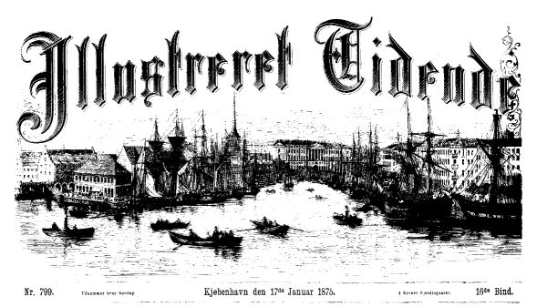
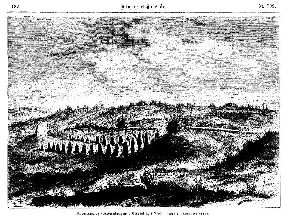
Von Theodor Siersted (Peter Theodor Emil Siersted - *08.04.1852 - 08.06.1915, Schuldirektor - link-LIVES)
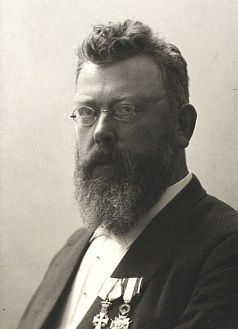
Bildquelle: Bildersammlung der Königlichen Bibliothek in Kopenhagen - Fotograf: Jul. Folkmann - Lizenz: Public Domainwurde das mehrbändige Werk "Danske Billeder für Skole og Hjem" über mehrere Jahre herausgegeben. In Volume 3, 1896, findet sich dankenswerter Weise genau diese Zeichnung mit einem erklärenden Text auf der S. 185 in sehr guter Qualität. Wie man sieht stehen 27 Steine der Schiffssetzung aufrecht.
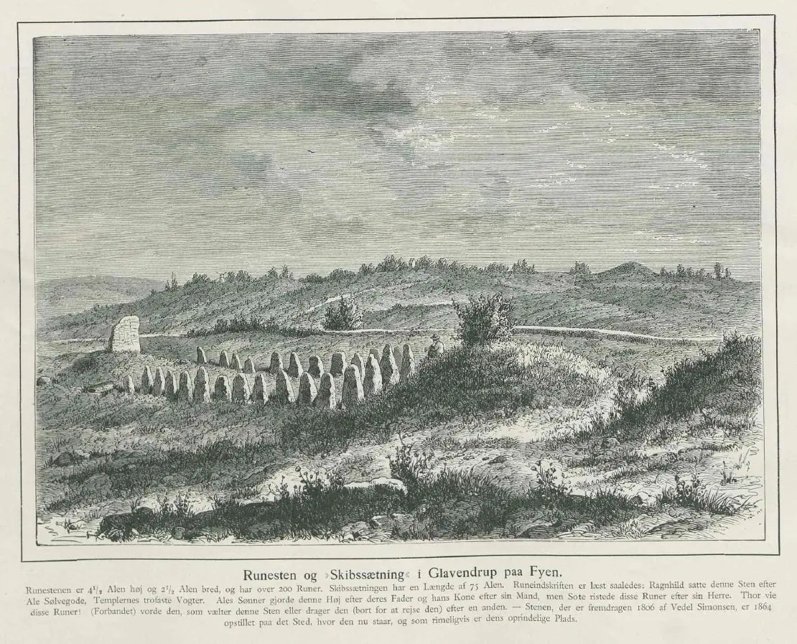
Der digitalisierten (farbigen) Version der Königlichen Bibliothek in Kopenhagen entlehnt - Lizenz: Public Domain
Der nächste relevante Beitrag zu dem Runenstein kommt von George Stephens (*13.12.1813 - 09.08.1895, englischer Archäologe und Philologe) in seinem Band II von 1867-68 mit dem Titel "The old-northern runic monuments of Scandinavia and England" auf den S. 692-701.
 Bildquelle:
Minder fra min Virksomhed paa Arkæologiens
Omraade fra 1845 til 1908 von
Magnus Petersen (*04.09.1827 - 01.02.1917) auf der
Seite 265 - Lizenz:
Public Domain
Bildquelle:
Minder fra min Virksomhed paa Arkæologiens
Omraade fra 1845 til 1908 von
Magnus Petersen (*04.09.1827 - 01.02.1917) auf der
Seite 265 - Lizenz:
Public Domain
Auf den S. 694 - 695 bringt er dabei diese Zeichnung von Magnus Petersen aus dem Mai 1864, die ich für die Wiedergabe hier etwas anders arrangiert habe.
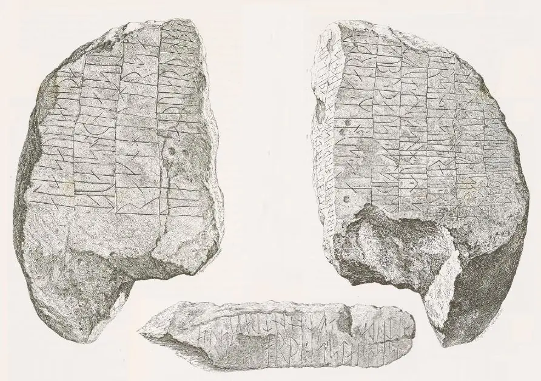
Er war mit einer schriftlichen Erlaubnis von Jens Jacob Asmussen Worsaae in Begleitung von Magnus Petersen auf Kosten des Museums vor Ort gewesen, nachdem der ihm von seinem ersten Besuch und der vermuteten Schiffssetztung erzählt hatte. Stephens bringt zu Ausdruck, dass es wohl nicht mehr lange gedauert hätte und der Runenstein wäre zerkleinert worden und verschwunden. Er schreibt auch: "...Mein versierter und erfahrener Künstler, Herr J. Magnus Petersen, war bei mir, und die angefertigten Abdrücke und Zeichnungen waren äußerst genau, wobei das gesamte Buchstabensystem sowohl nach Maß als auch nach Augenmaß übertragen wurde. Daher können die hier angegebenen Tafeln als endgültig angesehen werden. Es gibt nie etwas Besseres. Wir verbrachten zwei ganze Tage damit, den Block bei verschiedenen Lichtverhältnissen zu untersuchen und zu kopieren, nachdem wir das Ganze zuvor sorgfältig gereinigt und gewaschen hatten..."
Weiter schreibt er sehr ausführlich: "...Der
Stein war in eine tiefe Grube gefallen, die durch fortwährendes Ausgraben des
feinen Sandes der Grabstätte entstanden war, auf der er ursprünglich stand. Aber
glücklicherweise war er nur bis zum unbeschrifteten Rand eingesunken, so dass,
als wir die Erde rundherum ausgegraben hatten, die ganze beschriftete Fläche
sichtbar war. Es gab also keine Schwierigkeiten, zumal wir das schönste Wetter
hatten. In dem Sandhaufen, den man am Fuß des Steins aufgeworfen hatten,
fand ich ein kleines Stück Eisen, das stark korrodiert war, offenbar
ein Fragment eines Eisenschwerts, von dem anscheinend noch ein
Teil des Griffs übrig war. Der Runenstein steht jetzt wieder aufrecht,
und ich hoffe, dass er noch mindestens weitere tausend Jahre stehen bleibt und
die alten Hügelgräber bewacht, die er überblickt. Dank der aktiven und
freundlichen Vertretungen und Bemühungen des Staatsbeamten C.
Christensen, des Agenten, der mich begleitete, geschickt unterstützt
durch den freundlichen Herrn Berg, den Landwirt dieses
Teils von Dallund, ist der Glavendrup-Stein jetzt
Staatseigentum. Die vier Pächter Jens Pedersen, Lars Larsen,
Hans Knudsen und Niels Jorgensen, denen das Brachland mit
seinen Hügelgräbern und Runensteinen gemeinsam gehört, lehnten
vornehm jede Entschädigung für das Denkmal ab, und das Museum
musste daher nur die Kosten dafür tragen. Dies war jedoch aufgrund des
enormen Gewichts des Steinblocks und der erforderlichen Vorsichtsmaßnahmen, um die
Schrift nicht zu beschädigen, eine sehr teure und schwierige Aufgabe.
Schließlich wurde der letzte Aufzug gegeben und am Jahrestag des dänischen
Grundgesetzes, dem 5. Juni 1864, wurde er für die Sonne und die Wissenschaft
geöffnet etwa 1000 Jahre, nachdem er zum ersten Mal errichtet und geschnitzt
wurde!..."
Und weiter: "...Das lange, schmale Stück wildes Land, auf dem
dieser Stein thront, sieht aus wie ein Tempelbezirk oder eine Grabstätte in
heidnischen Zeiten und weist neben dem, auf dem der Runenstein steht, noch
beträchtliche Überreste von mindestens zwei Grabhügeln auf. Eine vierte Höhe
könnte ein Verdammnisring oder eine Steinsetzung gewesen sein, die viele
Steinblöcke in einer bestimmten Reihenfolge trug, obwohl sie jetzt
durcheinandergebracht und umgeworfen wurden und viele von ihnen zerbrochen
waren. Andere solcher Säulen wurden offensichtlich entfernt. Der Grat selbst
eignete sich gut für die Zusammenführung von Lebenden oder Toten. Von seinem
höchsten Punkt aus haben wir nach allen Seiten einen herrlichen Ausblick über
die Weite des Landes. Aber das auffälligste Objekt, das man sehen kann,
ist der gewaltige, noch nie geöffnete Grabhügel namens Thors Hügel. Dieses so
nahe gelegene Dorf sowie das angrenzende Dorf Thorup [= Thors Dorf] hatten
wahrscheinlich etwas mit der Anrufung von Thor als dem örtlichen Gott oder mit
dem hier begrabenen Helden zu tun; denn er war Gode, sowohl Tempelvorsteher als
auch Häuptling und ehrenhafter Diener der Tempel (oder Götter). Und
wahrscheinlich war Thor der Gott, der dort verehrt wurde...Die Hügel selbst
bestehen hauptsächlich aus sehr feinem, weichem Sand und leichtem Ton. Das ist
so verlockend, dass die Bauern viele Jahre lang darin gegraben und den Boden
weggetragen haben, und es gibt jetzt tiefe Löcher, wo einst Anhöhen waren. In
eines davon stürzte der Runenstein..."
Er beschreibt dann weiter die örtlichen Besitzverhältnisse, beginnend mit Baron Carl Frederik Axel Bror von Blixen-Finecke (*15.08.1822 - 06.01.1873 in Baden-Baden, Gutsbesitzer und Politiker - übrigens der Großvater des Großwildjägers Bror von Blixen-Finecke, des Ehemannes der Schriftstellerin Karen Blixen - siehe Spielfilm: Jenseits von Afrika),
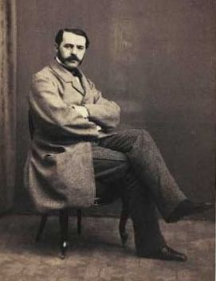
Bildquelle: Wikipedia - Lizenz: Public Domainder auf Schloss Dallund - Dallundvej 63, 5471 Søndersø - aus dem 16. Jahrhundert lebte. Zu seiner Person führt Stephens noch aus: "...Dieser Glavendrup-Stein war früher Eigentum von Baron Blixen-Finecke und gehörte zu seinem schönen Anwesen Dallund. Aber als er die Außenhöfe an die Bauernschaft verkaufte, wurde der Streifen des alten Grablandes zu deren gemeinsamen Basis. Er zeigte jedoch lebhaftes Interesse daran, den Stein für die Krone zu erhalten, und ich muss ihm für die Unterstützung danken, die er mir auf meiner Runenexpedition gewährt hat..."
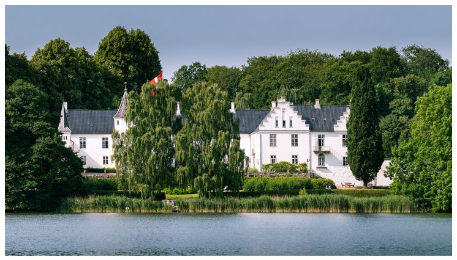
Bildquelle: Den store Danske - Fotograf: Magnus Duus Asmussen - Lizenz: CC-BY-SAund zu dessen Grund und Boden die Fundstelle Glavendrup gehörte. Im Jahr 1925 wurde das Schloss Dallund übrigens vom Poul Helweg Mikkelsen (*08.01.1876 - 07.11.1940, Apotheker in Odense - link-LIVES)
 Bildquelle:
Fynske Årbøger -
1941 - Artikel von Svend Larsen "Apoteker
P. Helweg Mikkelsen" - S. 461
Bildquelle:
Fynske Årbøger -
1941 - Artikel von Svend Larsen "Apoteker
P. Helweg Mikkelsen" - S. 461
gekauft, der über den Fund und die Ausgrabung des Ladbyschiffs bekannt wurde. Der übergab es dann schon zwei Jahre später an "Centralforeningen Af Sygekasser i Odense Amt".
Dann beschreibt Stephens die Historie des Runensteins ab 1806 durch Laurits Schebye Vedel Simonsen, bevor er zur Deutung der Inschrift übergeht und verweist auf den Zusammenhang mit dem Runenstein von Tryggevælde/Seeland, dessen Auftraggeberin "Ragnhild" wohl zweimal verheiratet / verwitwet war.
Magnus Petersen beschreibt in seinen Lebenserinnerungen mit dem Titel "Minder fra min virksomhed paa arkaeologiens omraade fra 1845 til 1908" von 1909 - S. 87 ff. - in einem eigenen Absatz mit der Überschrift "ANDEN REJSE TIL GLAVENDRUP." diese gemeinschaftliche Reise und ihre tagelange Arbeit vor Ort. So heißt es dort z.B. (übersetzt): "...Es dauerte nicht lange, bis er mir mitteilte, dass er mit dem Inspektor des Museums, Professor Worsaae, gesprochen und von ihm die Erlaubnis erhalten hatte, dass ich auf Kosten des Museums mit ihm nach Glavendrup reisen dürfe, um das Denkmal und den Runenstein zu untersuchen, zu vermessen und zu zeichnen. Im Juni 1864 reisten wir beide dorthin und ich fand das Ganze war immer noch in etwa dem gleichen Zustand wie bei meinem ersten Anblick, einige der stehenden Steine der Schiffssetzung waren wahrscheinlich umgefallen und andere der zuvor liegenden waren entfernt worden, aber die tiefen Löcher zeigten immer noch, wo sie gestanden hatten. Stephens war verärgert über den heruntergekommenen Zustand des Denkmals. Der prächtige Runenstein mit seinen ca. 200 Runen lag in einem tiefen Loch am westlichen Ende der Schiffssetzung auf dem Boden. Ich habe davon eine Zeichnung gemacht..." / "...Stephens versprach, dass er nicht ruhen würde, bis er den verantwortlichen Staatsdiener dazu gebracht hätte, dieses stolze in Dänemark einzigartige Denkmal in einen angemessenen Zustand zu versetzen und vom Staat schützen zu lassen. Die Direktion für Denkmalpflege veranlasste dann außerdem, dass der Stein herausgenommen und auf einer kleinen Anhöhe in der Mitte des Steinkreises aufgestellt wurde und die Anlage erhalten blieb. Dieser Schutz wurde jedoch nicht strikt überwacht, denn als ich viele Jahre später auf der Runenreise mit Prof. Wimmer im Jahr 1878 erneut vor Ort war und den Stein erneut zeichnete, waren die meisten Steine in den Steinreihen geraubt..." / "... als ich ein paar Jahre später mit Wimmer für eine Überarbeitung der Inschrift dort war, versuchten wir die Position der Schiffssetzung zu rekonstruieren, aber sie entsprach nicht ganz meinem Plan von 1864, und ich muss diese Rekonstruktion als weniger glücklich betrachten..." / Petersen erwähnt auch, dass: "...Im Gegensatz zu Prof. Thorsen, der mich nie auf den Runensteinreisen begleitete, wollte Stephens unbedingt dabei sein und sich die Inschriften selbst ansehen, was ich natürlich sehr zu schätzen wusste..."
Mit den Datumsangaben passt es manchmal nicht so ganz. Laut Jacobsen/Moltke (Nr. 209, Spalte 249) stammt die erste Zeichnung von Magnus Petersen, die sich im "Antikvarisk-Topografisk Arkiv" in Kopenhagen bewahrt hätte aus dem Jahr 1864 (Prospekt, plan og tegninger). Petersen schreibt aber oben, dass er 1855 erstmals vor Ort war. Aus dem Jahr existiert aber offenbar keine Plan-/Steinzeichnung. Stephens schreibt nun hier sie wären im Mai 1864 da gewesen, während es bei Petersen im Juni 1864 war.
Prof. P. G. Thorsen (*07.08.1811 - 06.05.1883, Bibliothekar, Runenforscher und Historiker - link-LIVES)
 Bildquelle: Fotografie
zw. 1863-1900 von Fotograf Budtz Müller
(*26.12.1837 -
30.12.1884) -
Det Kgl. Biblioteks billedsamling - Lizenz:
Public Domain
Bildquelle: Fotografie
zw. 1863-1900 von Fotograf Budtz Müller
(*26.12.1837 -
30.12.1884) -
Det Kgl. Biblioteks billedsamling - Lizenz:
Public Domain
bringt in seinem Buch Runemindesmærkerne i Slesvig, 1864 auf der S. 337, einen ganz kurzen Beitrag zur Inschrift auf der Steinseite A. Er zeigt in seinem weiteren Runenwerk - in "De danske runemindesmærker beskrevne og forklarede, anden Afdeling - Jyllands Runemindesmærker, Afbildninger og Text, I. Afbildninger, 1879" - unter der Nummer 21a - diese Zeichnung von Prof. Julius Magnus Petersen
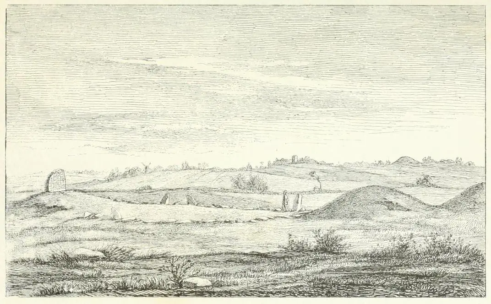
Diese Zeichnung zeigt die Schiffssetzung mal aus einem anderen Blickwinkel. Heutzutage ist die Wahrnehmung durch das angelegte Wäldchen mit den dicht an den Steinen stehenden Bäumen leider eine völlig andere.
In seinem Textband "Jyllands Runemindesmærker, Afbildninger og Text, II. Text, 1880" macht Thorsen auf den S. 241-244 Ausführungen zu dem Runenstein und gibt vorangestellt über zwei Tafeln (1 / 2) die Zeichnungen von Laurits Schebye Vedel Simonsen wieder (siehen oben).
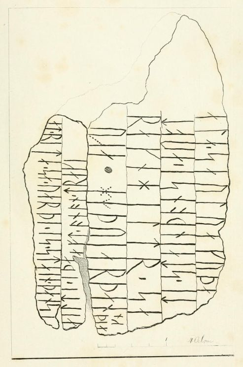
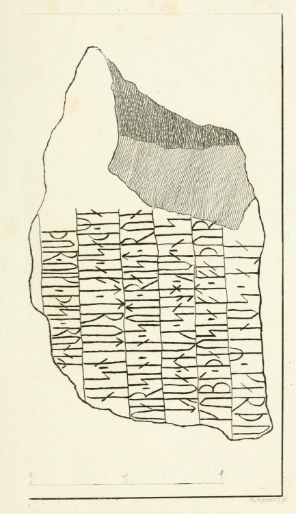
In seinem Textbeitrag führt er aus: "...Er wurde tatsächlich erstmals durch Hofman Bang bekannt und von diesem gezeichnet, dessen Anwesen in der Grafschaft liegt, und er wurde - seltsamerweise - erstmals auf den Stein aufmerksam, als die Bauern ihm erzählten, dass die vorbeikommenden Juden dorthin gingen, um die Inschrift zu lesen, die sie für hebräisch hielten...". Danach setzt er sich mit der Inschrift auseinander, wobei es seiner Auffassung nach unklar sei, welche Seite der Inschrift zuerst gelesen werden müsse.
P. G. Thorsens Nachlass (Bezeichnet als: P. G. Thorsens optegnelser, tegninger m.m. vedrørende runer og runemindesmærker - überführt aus der Kopenhagener Universitätsbibliothek 1929 - Gemäß Ministerialschreiben vom 04.03.1929; früher benannt als Additamenta 612 kvart) - findet sich heute in der Königlichen Bibliotek in Kopenhagen unter NKS 3296 kvart (in mehreren einzelnen Pappschachteln). Dessen Unterlagen konnte ich im Rahmen meines Kopenhagen Studien Tripps am 28.09.2022 durchforsten. Allerdings fand ich dabei nur in der Pappschachtel mit der Nummer 18 diese Zeichnung von Magnus Petersen. Die sieht nochmals völlig anders aus, wie die sonst gängigen Ansichten von ihm. Darauf sind mehrere eigenhändig angebrachte Datumsangaben wie man sieht - unten: 07.08. und 30.08.1870 (?). Bei dem Eintrag rechts oben dürfte es sich um einen Nachtrag von Thorsen handeln - 18.06.1875.
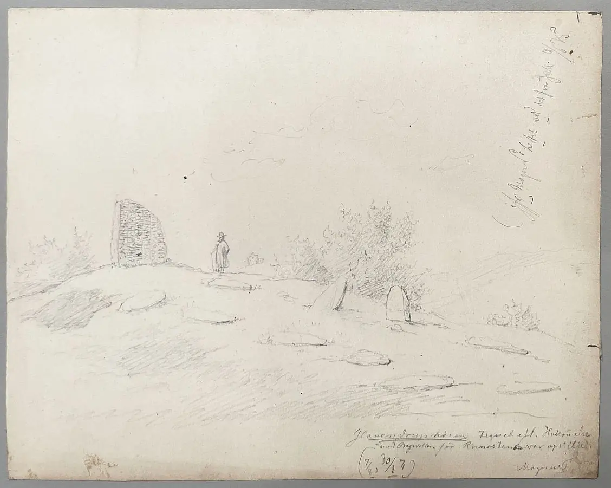
Bei einem Studienaufenthalt im September 2022 in Kopenhagen fand ich in der Königlichen Bibliothek in dem Nachlass von Prof. Ludv. F. A. Wimmer (*07.02.1839 - 29.04.1920, Philologe und Runenforscher - link-LIVES - Politiets registerblade - Bestattungsprotokoll)
 Bildquelle: Fotografie
zw. 1877-1900 von Fotograf Hansen & Weller -
Det Kgl. Biblioteks billedsamling - Lizenz:
Public Domain
Bildquelle: Fotografie
zw. 1877-1900 von Fotograf Hansen & Weller -
Det Kgl. Biblioteks billedsamling - Lizenz:
Public Domain
diese Originalzeichnung von Petersen aus dem Jahr 1864.
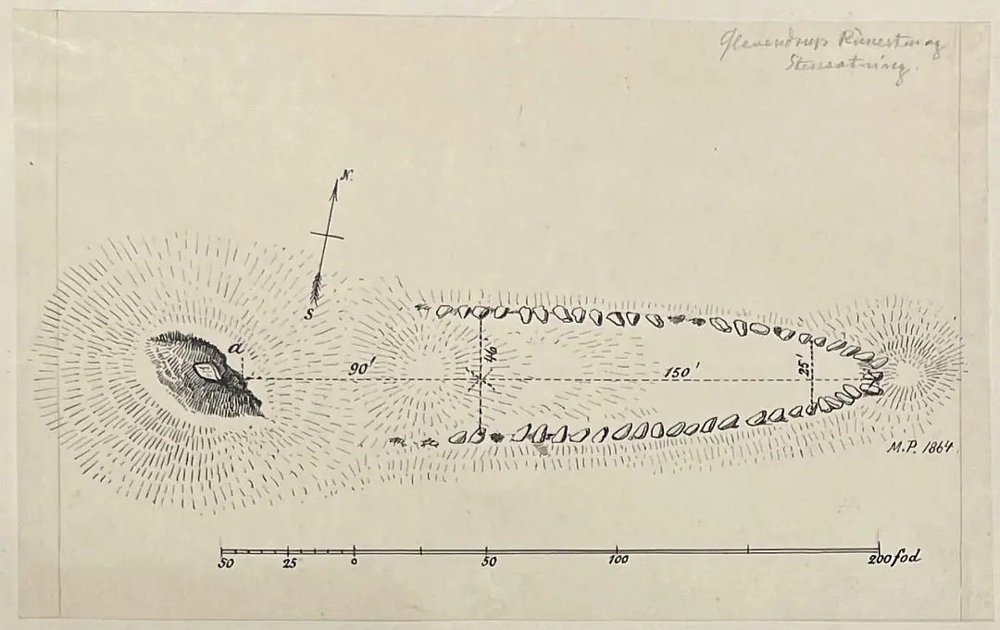
Daraus ist ersichtlich, dass Petersen damals offenbar 46 aufrecht stehende Steine sah und Spuren von vermutlich sieben weiteren Steinen für ihn erkennbar waren, die schon zu der Zeit fehlten. Exakt die Zeichnung findet sich auch im großen Runenwerk "De danske runemindesmærker undersøgte og tolkede af Ludv. F. A. Wimmer, Andet Bind, Runestenene i Jylland og på øerne. 1899-1901 von Ludv. F. A. Wimmer auf der S. 375 als "Plan af mindesmærket i Glavendrup". Auf der vorhergehenden Seite 374 findet sich außerdem noch diese Zeichnung, die der unten stehenden vom 18. Sept. 1874 stark ähnelt.
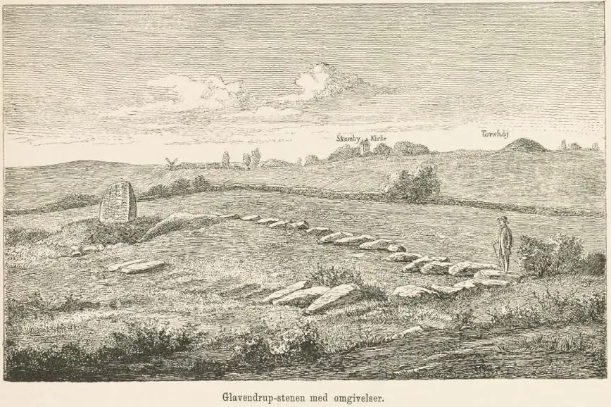
In dem großen Runenwerk von Ludv. F. A. Wimmer, De danske runemindesmærker undersøgte og tolkede af Ludv. F. A. Wimmer, Andet Bind, Runestenene i Jylland og på øerne. 1899-1901 - Nr. 8, S. 369-383 kommt er auf den Runenstein zu sprechen. Er hat ihn auch - jeweils in Begleitung von Magnus Petersen - insgesamt dreimal vor Ort untersucht: am 15.08.1873 / 20./21.07.1879 und am 23.08.1900.
In den Unterlagen von Ludv. F. A. Wimmer in der Königlichen Bibliotek in Kopenhagen, die ich vor Ort am 26. und 27.09.2022 studieren durfte, befinden sich in "III - Originaltegninger af de danske Runemindesmærker, udførte paa Undersøgelsesrejserne af Magn. Petersen og kontrollerede paa Stedet af Ludv. Wimmer, samt Prøvetryk af de paa Grundlag af de nævnte Tegninger, Aftryk o. s. v. til De danske Runemindesmærker" udførte Afbildninger med Wimmers Rettelser" unter der Nummer 87


diese Zeichnungen des Runensteins von Magnus Petersen, die er auf den 20.07.1879 datiert hat.
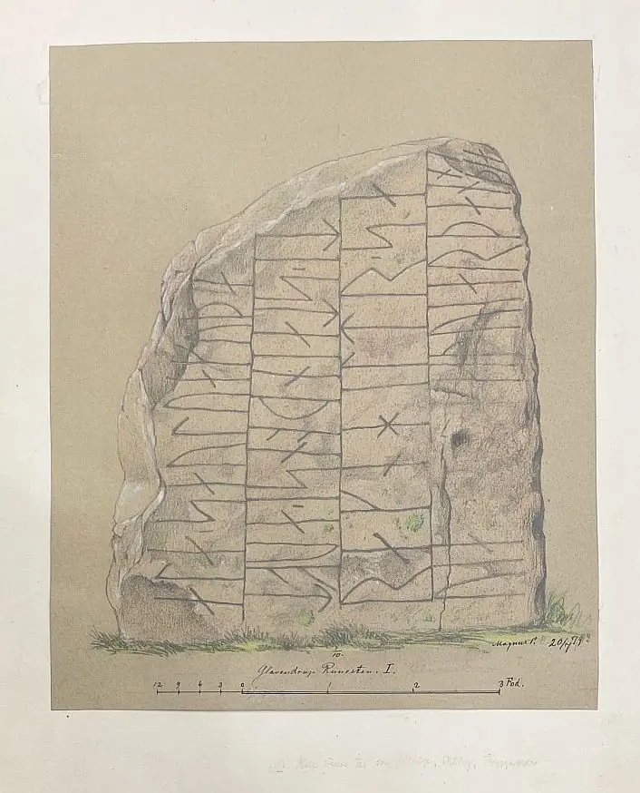
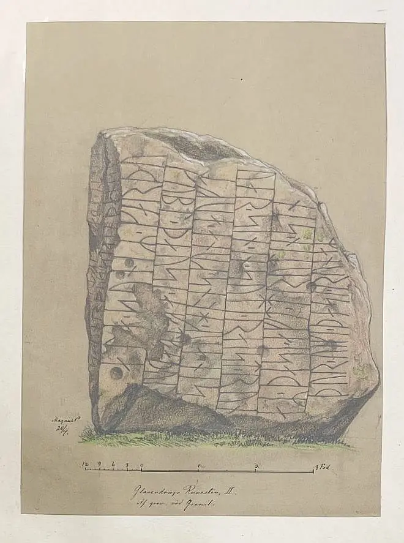
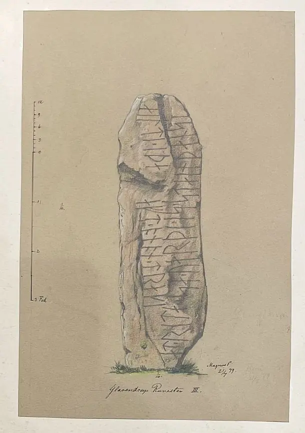
Zwei weitere Zeichnungen von Magnus Petersen, beide am 18. September 1874 von ihm erschaffen, können in der digitalen Sammlung des Nationalmuseums Kopenhagen abgerufen werden - Lizenz jeweils: Public Domain - Zeichnung 1 - Zeichnung 2
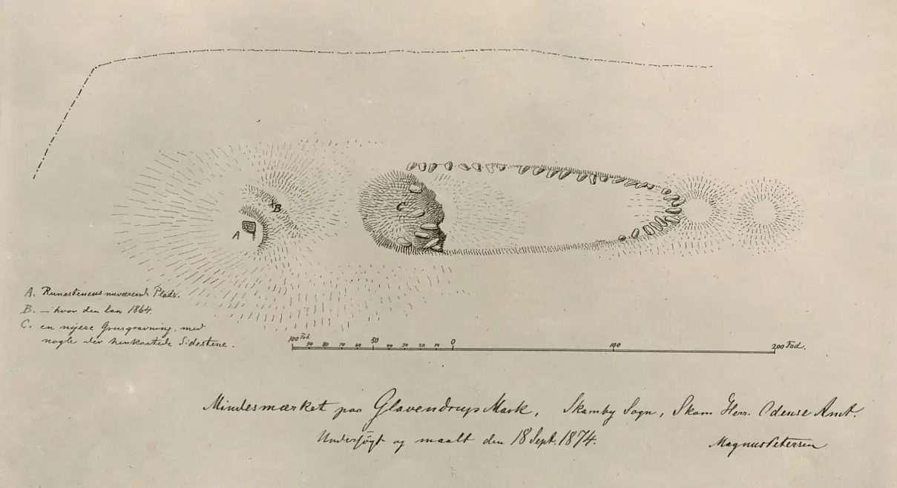
Hier sind neben dem Runenstein nur noch 29 Steine an ihrem ursprünglichen Ort und 7 weitere Steine im Bereich der von Petersen mit "C" als Kiesgrube (Grusgravning) bezeichnet. Den Runenstein fand er an der Position "A", während er bei seinen Untersuchungen im Jahr 1864 noch an der mit "B" markierten Stelle lag.
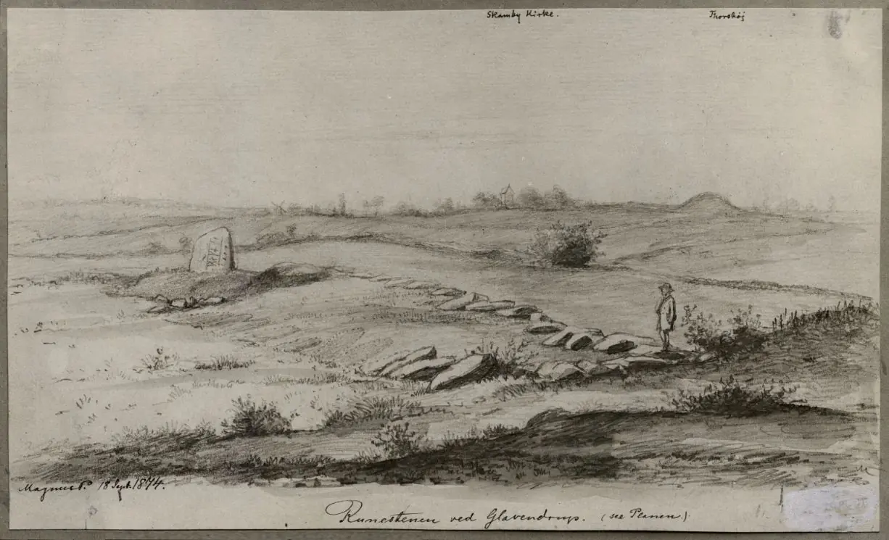
In dieser am gleichen Tag datierten Zeichnung liegen bereits alle Steine der Schiffssetzung umgefallen am Boden und nur noch der Runenstein steht aufrecht. Spuren von mehreren inzwischen verschwundenen Steine hat Petersen mit einer gestrichelten Linie dargestellt.
Um das Jahr 1900 kamen so langsam schwarz-weiss Fotografien von der Schiffssetzung und dem Runenstein von Glavendrup auf. So haben sich einige davon in der digitalen Sammlung von "arkiv.dk" bewahrt. Auf Anfrage wurde mir von den betreffenden Lokalarchiven jeweils die Verwendung auf meiner Webseite unter Hinweis auf das jeweilige Archiv im Mai 2024 erlaubt.
Diese frühe Fotografie aus dem Jahr 1892 - dem Jahr, in dem die gesamte Anlage als Kulturgut unter Schutz gestellt wurde - zeigt die Aufrichtung des Runensteins im Zusammenhang mit groß angelegten Restaurierungsarbeiten, die der dänische Archäologe Vilhelm Christian Boye (*28.06.1837 - 22.09.1896 - Link-LIVES - Politiets registerblade - Bestattungsprotokoll) in den Jahren 189294 für das Nationalmuseum in Kopenhagen durchführte. Hier eine Abschrift seines zweiseitigen Berichts, den er am 17.10.1892 verfasst hat. Ich habe ihn von der Webseite des dänischen Kulturministeriums "Fund og Fortidsminder" zur Örtlichkeit Glavendrup und aus dem dort eingestellten Bericht von 1917 extrahiert. In dem Bericht schreibt er, dass insgesamt (nur noch) 22 der Schiffssettzung zugehörige Steine vorgefunden wurden, nämlich 17 auf der südlichen und 5 auf der nördlichen Seite.
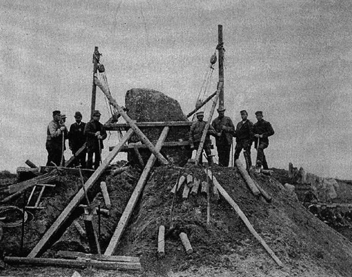
Diese Restaurierung hatte jedoch gewisse Schwächen. Sowohl Prof. Wimmer als auch Magnus Petersen kritisierten die fehlerhafte Verjüngung, die die Schiffssetzung nun im Westen erhalten hatte, da der Runenstein dadurch außerhalb der Steinreihen platziert wurde. Darüber hinaus war die Höhe, die für den Stand des Runensteins geschaffen wurde, viel zu hoch. Dies sieht man auch gut auf den nachfolgenden Fotografien.
Eine Übersichtsaufnahme der Schiffssetzung aus dem Jahr 1892 findet sich in der Abhandlung "Runemonumentet ved Glavendrup" von Erling Albrectsen (*23.07.1904 - 04.07.1989, Museuminspektor in Odense von 1940-1971), die erstmals im Jahr 1958 in den "Odense Bys Museers årbog Fynske Minder" erschien.
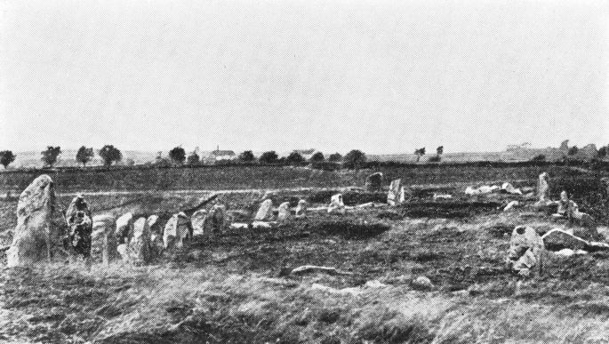
Dazu heißt es: "Nach dem Foto im Eigentum des königlichen Bauinspektors Knud Lehn Petersen (*01.06.1890 - 23.10.1974 - link-LIVES). Vermutlich 1892 von Schulmeister Hans Rasmussen aufgenommen, nachdem die meisten Steine entfernt worden waren. Andererseits steht der Runenstein noch immer auf dem kleinen künstlichen Hügel, auf dem er 1864 von Stephens errichtet wurde. In der Mitte der Schiffssetzung sind nach dem Sandgraben Löcher zu erkennen."
Eine sw Fotografie aus dem Jahr 1903 von einem Herrn namens Holger Rasmussen zeigt nur den Runenstein. Der digitalen Sammlung des Nationalmuseums Kopenhagen entnommen - Lizenz: CC-BY-SA
Diese Stereoskopie Fotografie entstammt der Zeit zwischen 1900 und 1920 und wird beim Søndersø & Omegns Lokalhistoriske Arkiv verwahrt. Unter diesem Link kann man die Datei online aufrufen.
Vermutlich von 1915 stammt diese Aufnahme, die dann wohl eine Ansichtskarte zierte. Auch die ist vom Søndersø & Omegns Lokalhistoriske Arkiv und kann unter diesem Link online aufgerufen werden.
Die nächste Aufnahme wurde in der Zeit von 1900 - 1930 aufgenommen und stammt vom Otterup Lokalhistoriske Arkiv. Unter diesem Link kann man die Datei online aufrufen.
Auf dieser Aufnahme sieht man an der linken Steinreihe sehr deutlich den falsch restaurierten Verlauf der Schiffssetzung.
Wenn man sich dann den Baumwuchs - gepflanzt 1907 - auf dieser Fotografie aus der 1916 erschienenen Abhandlung Rasmus Nielsen - Glavendrup-Stenen - Årbog for Odense og Assens Amter - 1916 - S. 459-473 - S. 465 - anschaut, entstand die obige Aufnahme doch sicherlich einige Jahre danach.
Übersetzung: "Schiffssetzung mit dem Runenstein im Hintergrund".
In seinen Ausführungen schreibt Rasmus Nielsen, dass der Bauer Knud Hansen, Sohn des Förster Hans Knudsen, ihm erzählt hätte, dass der Gutsverwalter Heiberg in den 1840er Jahren eigentlich den Auftrag zur Aufrichtung des Stein erteilt hätte. Aber von 1826 bis 1864 sei nichts dergleichen passiert. Als dann 1864 George Stephens vor Ort war unterzeichneten die vier Landverwalter diese Deklaration:
"Vi undertegnede Jens Pedersen, Lars Larsen, Hans Knudsen og Niels
Jørgensen, alle Gaardmænd i Glavendrup, erkende herved at have forpligtet os og
efterkommende Ejere til efter bedste Evne at frede om samt forhindre, at nogen
Overlast tilføjes den os i Forening tilhørende, ikke skyldsalte Fælleslod paa
Glavendrup Mark, der ved Udskiftningen er udlagt os som Grusgrav, saa at nævnte
Sten, der nu paa ny bliver oprejst, stedse kan bevares som et
Oldtidsmindesmærke. Nærværende Forpligtelse kan uden Udgift for os tinglæses og
noteres paa vore Ejendomme som en stedsevarende Servitut.
Glavendrup, den 27. Maj 1864.
Lars Larsen. Hans Knudsen. Niels Jørgensen. Jens Pedersen"
Übersetzung: "Wir, die Unterzeichner Jens Pedersen, Lars Larsen, Hans Knudsen und Niels Jørgensen, alle Landwirte in Glavendrup, bestätigen hiermit, dass wir uns und die nachfolgenden Eigentümer verpflichtet haben, nach besten Kräften das Gemeinschaftsgrundstück auf Glavendrup Mark, das uns in Gemeinschaft und ohne Verschulden gehört zu schützen und Störungen zu verhindern, und das zuvor für uns als Kiesgrube angelegt worden war, damit der besagte Stein, der jetzt neu errichtet wird, immer als antikes Denkmal erhalten bleiben kann. Diese Verpflichtung kann auf unseren Grundstücken kostenlos als unbefristete Dienstbarkeit eingetragen werden."
Auf der S. 463 bringt er diese Wiedergabe der Inschrift in Runenschrift:
Rasmus Nielsen berichtet weiter, dass Ludv. F. A. Wimmer bei seinem ersten Besuch im Jahr 1873 viele umgefallene Steine vorfand und bei einem späteren Besuch feststellen musste, dass etliche große Steine bereits verschwunden waren. Ein Mann aus der Gegend erzählte Nielsen, dass der größte von ihnen, der als Stevenstein im Osten gestanden hatte 5 Ellen hoch war (Anm.: 1 Elle ist 62,77 cm - dann wäre der Stein aber knapp 3,14 m hoch gewesen!).
Als das gesamte Denkmal 1892-94 geschützt wurde, gab es diese schriftliche Erklärung:
"Det saaledes fredlyste Mindesmærke er følgende: Et 264 Fod, Vest til Øst, langt, ved den østlige Ende 28 Fod bredt, ved den vestlige Ende 58 Fod bredt Jordstykke. Herpaa staar foruden den fredlyste Runesten Levningerne af en Skibssætning i Retning af Øst-Sydøst til Vest-Nordvest, bes taaende paa Sydsiden af 17 og paa Nor dsiden af 5 nu rejste Stene, hvoraf dog enkelte er delvis kløvede af Stenhuggere. Skibssætningen vender Forstavnen mod Øst-Sydøst og er 118 Fod lang samt 69 Fod fra Forstavnen, 39 Fod bred. Forstavnen staar i den vestlige Side af den ligeledes fredlyste Rævehøj , der stammer fra Broncealderen, dens sydlige Halvdel er forlængst bortgravet, nu er den 56 Fod i Tværmaal fra Vest til Øst og 28 Fod i Tværmaal fra Nord til Syd samt 6 Fod høj fra Bunden til Toppen.
Glavendrup, den 6. Oktober 1892
Knud Hansen
Übersetzung: "Das so geschützte Denkmal ist das Folgende: Ein 264 Fuß, von West nach Ost, langes, am östlichen Ende 28 Fuß breites, am westlichen Ende 58 Fuß breites Stück Land. Auf diesem stehen neben dem geschützten Runenstein die Reste einer Schiffssetzung in Richtung Ost-Südost bis West-Nordwest, auf dessen Südseite 17 und auf der Nordseite 5 heute erhöhte Steine stehen, einige davon wurden teilweise von Steinmetzen gespalten. Die Schiffssetzung hat den Bug in Ost-Südost-Richtung und ist 118 Fuß lang, 69 Fuß vom Bug entfernt und 39 Fuß breit. Der Bug steht auf der Westseite des ebenfalls geschützten Fuchshügel, das aus der Bronzezeit stammt. Seine südliche Hälfte wurde schon vor langer Zeit ausgegraben. Heute misst er im Querschnitt in West-Ost-Richtung 56 Fuß und im Querschnitt in Nord-Süd-Richtung 28 Fuß und ist 6 Fuß hoch von unten nach oben."
Der Unterzeichner war der Eigentümer des Grundstücks und neben ihm unterzeichneten sieben weitere Männer aus der Stadt Glavendrup, dass sie von ihrem Recht, Kies aus dem Schutzgebiet zu sammeln, das zuvor eine gemeinsame Kiesgrube der Stadt gewesen war, nicht mehr Gebrauch machen wollen.
Es wurde 1906 ein Verein namens Glavendrup-Stenen gegründet, der dann 18.000 Quadratmeter, ein Hektar rund um das Schutzgebiet, vom Grundbesitzer Knud Hansen für 2.000 DKK erwarb. Für das Pflanzen von Bäumen und Zäunen - als Schutz und Schattenspender - wurden weitere 1.000 DKK eingeplant. Das nötige Geld hat man bei der Landesbausparkasse in Odense geliehen. Und um die Schulden zurückzahlen zu können, verpflichteten sich die Vereinsmitglieder 4 DKK jährlich für 10 Jahre zu zahlen. Hervorzuheben ist auch, dass das Nationalmuseum 50 DKK gespendet hat. Diese Anerkennung hat den Verein sehr gefreut, denn sie zeigte, dass deren Ideen, Menschen um eine alte, sichtbare Erinnerungsstätte zu versammeln, auch bei den Wissenschaftlern Unterstützung fand."
Da bei den Vereinstreffen in den Jahren häufig schlechtes Wetter mit viel Regen
vorkam,
beschloss der Verein, eine Holzhalle als Wetterschutz zu bauen.
Dieses Halle wurde 1915 erbaut.
Sie war 50 Ellen lang und 20 Ellen breit.
Es gibt Sitzplätze
für 800 Personen.
Und beim Verfassungsfest am 05. Juni
1915 kamen dort mehr als 2000 Menschen zusammen.
Diese Fotos fertigte Erik Moltke (*04.04.1901 - 19.10.1984, Runologe, Historiker - link-LIVES)
 Bildquelle: Scan von Buchumschlag "Runerne i Danmark og ders
oprindelse" - Erik Moltke - 1976 - Lizenz:
CC-BY-SA
Bildquelle: Scan von Buchumschlag "Runerne i Danmark og ders
oprindelse" - Erik Moltke - 1976 - Lizenz:
CC-BY-SA
am 04.06.1931 an.
Der Digitale Sammlung des Nationalmusems Kopenhagen entnommen - Seite A / Seite B / Seite C - Lizenz jeweils: CC-BY-SA
Zwischen dem 08.10. und dem 27.11.1958 wurde in Absprache mit dem Nationalmuseum in Kopenhagen und dem Vorstand des Vereins "Glavendrup-Stein" durch Erling Albrectsen (*23.07.1904 - 1989, Museuminspektor in Odense von 1940-1971) seitens des Fyns Stiftsmuseum eine umfassende Ausgrabung und Restaurierung der gesamten Anlage - Schiffssetzung und Runenstein - durchgeführt. Die Diskrepanz zwischen den Zeichnungen von Magnus Petersen von 1864 / 1874 und der Rekonstruktion von Vilhelm Christian Boye (*28.06.1837 - 22.09.1896 - Link-LIVES - Politiets registerblade - Bestattungsprotokoll) von 1892-94 sollte aufgeklärt werden.
Im Vorfeld zu dem 2016 erschienenen Buch von Lisbeth M. Imer (*1973, Runologin am Nationalmuseum Kopenhagen) "Danmarks Runesten - en fortælling" reiste sie mit dem Fotografen Roberto Fortuna zur Bestandsaufnahme durch die Lande. Diese Fotos entstanden am 07.11.2011 und das vorangestellte Bild zeigt den Aufbau der Technik, mit der die wirklich herausragenden Fotos entstanden. Bei der Dame auf dem Foto handelt es sich um Lisbeth M. Imer. Internetfund im Zusammenhang mit dem damaligen Blog - leider nicht mehr abrufbar - https://natmus.dk/presse-og-nyheder/nyhedsarkiv/2012/runesten-skal-fotograferes/.


Diese drei Fotos wurden der digitalen Sammlung des Nationalmuseums in Kopenhagen entnommen - Foto 1 - Foto 2 - Foto 3 - Lizenz: CC-BY-SA
Die Anlage wird auch für die Aufstellung von Gedenksteinen genutzt. 1915 wurde ein Gedenkstein für das dänische Grundgesetz errichtet, 1920 ein Gedenkstein für die Wiedervereinigung mit Südjütland, 1926 ein Gedenkstein für Ansgar, 1936 ein Gedenkstein zum 400 Jahrestag der Reformation und 1946 ein Gedenkstein für die Befreiung von der deutschen Besatzung im Jahre 1945.
Text: "Ansgar 826-1926. Norden apostel. Den danske kirkes grundlægger. Det glade budskab få kun bar så apostolisk som Ansgar. Det fik slet ingen bedre tolk end her i nord hos hedningfolk. Rejst ved bidrag fra hele landet" / Übersetzung: "Ansgar 826-1926. Apostel des Nordens. Der Gründer der dänischen Kirche. Nur wenige verkündeten die frohe Botschaft so apostolisch wie Ansgar. Es gibt keinen besseren Dolmetscher als hier im Norden unter den Heiden. Aufgebracht durch Spenden aus dem ganzen Land".
Bei meinem letzten Aufenthalt in Glavendrup am 27. August 2016 habe ich diese Fotos gemacht. Irgendwie war es an dem Tag viel zu sonnig und die Bäume hatten zu viel Laub für gescheite Fotos.


Die Informationen der dänischen Runendatenbank lassen sich hier abrufen.
Über die Webseite "Runes" - ein Forschungsprojekt der Akademie zu Göttingen - kann man diese Informationen zu diesem Runenstein abrufen.
Über diese Homepage des dänischen Kulturministeriums "Fund og Fortidsminder" kann man (in dänischer Sprache) alle relevanten Infos zur Schiffssetzung mit dem Runenstein im Internet abrufen. Darüber kann auch ein 23-seitiger Bericht von 1917 (in dänischer Sprache) mit zahlreichen Grabungsbefunden, Zeichnungen, Bildern usw. abgerufen werden. Aus dem Jahr 2018 findet sich dort auch ein Zustandsbericht vom Steinkonservator Leif Vognsen.
Bei einer Art Restaurierung wurde im September 2014 der Runenstein auf dem Grabhügel neu angelegt. Außerdem wurden Baumschnittarbeiten durchgeführt. Ein ausführlicher 12-seitiger Bericht (in dänischer Sprache) "Rapport over rydnings- og reetableringsarbejde udført ved Glavendrup Monumentet på Fyn" kann im Internet hier als Download abgerufen werden. Darin finden sich auch zahlreiche Fotos.
Eigenes Foto - Glavendrup am 27. August 2016
Über diesen Link findet man die in dänischer Sprache gehaltene und reich mit historischen Fotos bebilderte Abhandlung "Runemonumentet ved Glavendrup" von Erling Albrectsen (*1904 - 1989, Museuminspektor in Odense von 1940-1971), die erstmals im Jahr 1958 in den "Odense Bys Museers årbog Fynske Minder" erschien.
Weitere Literaturhinweise:
Rasmus Nielsen - Glavendrup-Stenen - Årbog for Odense og Assens Amter - 1916 - S. 459-473